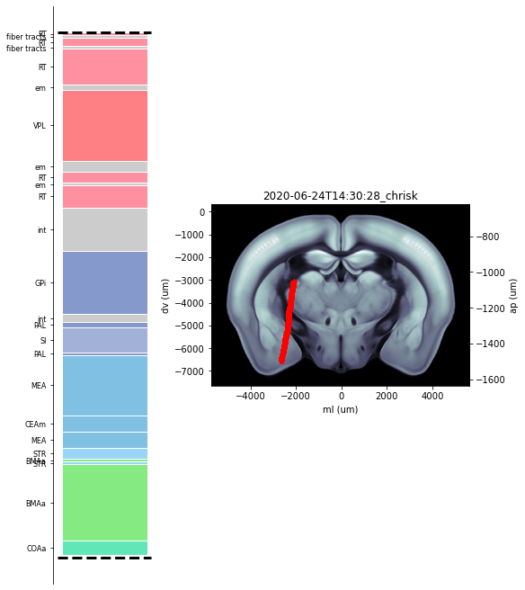

Get previous ephys alignments¶
Extract channel locations from reference points of previous alignments saved in json field of trajectory object Create plot showing histology regions which channels pass through as well as coronal slice with channel locations shown
[1]:
# import modules
import numpy as np
import matplotlib.pyplot as plt
from one.api import ONE
from ibllib.pipes.ephys_alignment import EphysAlignment
import ibllib.atlas as atlas
# Instantiate brain atlas and one
brain_atlas = atlas.AllenAtlas(25)
one = ONE()
# Find eid of interest
subject = 'CSHL047'
date = '2020-01-22'
sess_no = 2
probe_label = 'probe01'
eid = one.search(subject=subject, date=date, number=sess_no)[0]
# Load in channels.localCoordinates dataset type
chn_coords = one.load_dataset(eid, 'channels.localCoordinates.npy',
collection=f'alf/{probe_label}')
depths = chn_coords[:, 1]
# Find the ephys aligned trajectory for eid probe combination
trajectory = one.alyx.rest('trajectories', 'list', provenance='Ephys aligned histology track',
session=eid, probe=probe_label)
# Extract all alignments from the json field of object
alignments = trajectory[0]['json']
# Load in the initial user xyz_picks obtained from track traccing
insertion = one.alyx.rest('insertions', 'list', session=eid, name=probe_label)
xyz_picks = np.array(insertion[0]['json']['xyz_picks']) / 1e6
# Create a figure and arrange using gridspec
widths = [1, 2.5]
heights = [1] * len(alignments)
gs_kw = dict(width_ratios=widths, height_ratios=heights)
fig, axis = plt.subplots(len(alignments), 2, constrained_layout=True,
gridspec_kw=gs_kw, figsize=(8, 9))
# Iterate over all alignments for trajectory
# 1. Plot brain regions that channel pass through
# 2. Plot coronal slice along trajectory with location of channels shown as red points
# 3. Save results for each alignment into a dict - channels
channels = {}
for iK, key in enumerate(alignments):
# Location of reference lines used for alignmnet
feature = np.array(alignments[key][0])
track = np.array(alignments[key][1])
# Instantiate EphysAlignment object
ephysalign = EphysAlignment(xyz_picks, depths, track_prev=track, feature_prev=feature)
# Find xyz location of all channels
xyz_channels = ephysalign.get_channel_locations(feature, track)
# Find brain region that each channel is located in
brain_regions = ephysalign.get_brain_locations(xyz_channels)
# Add extra keys to store all useful information as one bunch object
brain_regions['xyz'] = xyz_channels
brain_regions['lateral'] = chn_coords[:, 0]
brain_regions['axial'] = chn_coords[:, 1]
# Store brain regions result in channels dict with same key as in alignment
channel_info = {key: brain_regions}
channels.update(channel_info)
# For plotting -> extract the boundaries of the brain regions, as well as CCF label and colour
region, region_label, region_colour, _ = ephysalign.get_histology_regions(xyz_channels, depths)
channel_depths_track = (ephysalign.feature2track(depths, feature, track) -
ephysalign.track_extent[0])
# Make plot that shows the brain regions that channels pass through
ax_regions = fig.axes[iK * 2]
for reg, col in zip(region, region_colour):
height = np.abs(reg[1] - reg[0])
bottom = reg[0]
color = col / 255
ax_regions.bar(x=0.5, height=height, width=1, color=color, bottom=reg[0], edgecolor='w')
ax_regions.set_yticks(region_label[:, 0].astype(int))
ax_regions.yaxis.set_tick_params(labelsize=8)
ax_regions.get_xaxis().set_visible(False)
ax_regions.set_yticklabels(region_label[:, 1])
ax_regions.spines['right'].set_visible(False)
ax_regions.spines['top'].set_visible(False)
ax_regions.spines['bottom'].set_visible(False)
ax_regions.hlines([0, 3840], *ax_regions.get_xlim(), linestyles='dashed', linewidth=3,
colors='k')
# ax_regions.plot(np.ones(channel_depths_track.shape), channel_depths_track, '*r')
# Make plot that shows coronal slice that trajectory passes through with location of channels
# shown in red
ax_slice = fig.axes[iK * 2 + 1]
brain_atlas.plot_tilted_slice(xyz_channels, axis=1, ax=ax_slice)
ax_slice.plot(xyz_channels[:, 0] * 1e6, xyz_channels[:, 2] * 1e6, 'r*')
ax_slice.title.set_text(str(key))
# Make sure the plot displays
plt.show()
